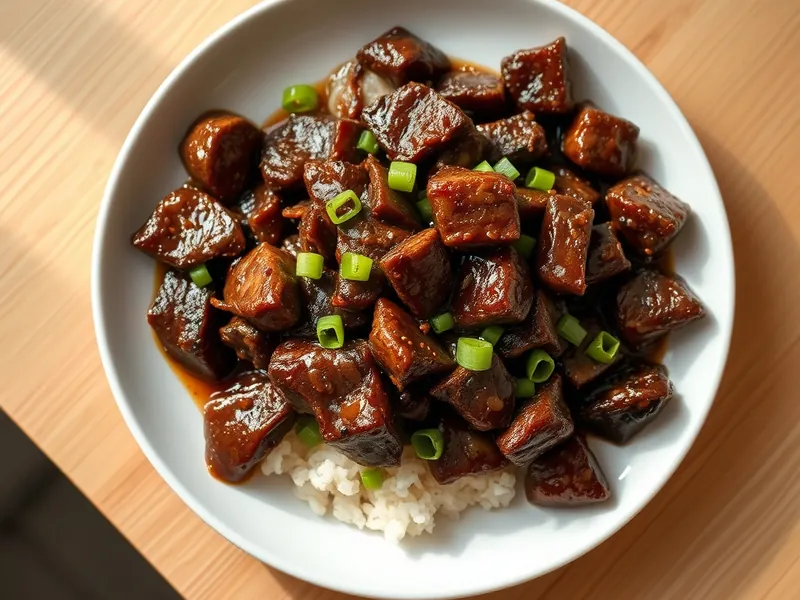

Говядина по-монгольски с зелёным луком
Хрустящие ломтики говядины в густом сладко-солёном соусе с имбирём и чесноком
25 мин2 порц.640 ккал на порциюБ 36 · Ж 42 · У 31Азиатская кухня
Открыть в приложении: порции, таймеры, список покупок
Продукты на 2 порц.
- Говядина350 г
- Крахмал2 ст. л.
- Соевый соус3 ст. л.
- Сахар1 ст. л.
- Чеснок3 зуб.
- Имбирь10 г
- Зелёный лук0,5 пучка
- Растительное масло3 ст. л.
- Вода60 мл
Как готовить
- Нарежьте говядину (вырезку или толстый край) тонкими ломтиками поперёк волокон. Обваляйте в крахмале и стряхните лишнее, 5 минут.
- Натрите имбирь, мелко порубите чеснок, зелёный лук нарежьте отрезками по 3 см. Смешайте соевый соус, сахар и воду.
- Разогрейте масло на сильном огне. Обжарьте говядину в два захода по 2-3 минуты до хрустящей коричневой корочки, выложите в тарелку.
- Слейте из сковороды почти всё масло, оставьте 1 ст. л. На среднем огне прогрейте чеснок и имбирь 30 секунд до аромата.
- Влейте соус и уваривайте 2-3 минуты, пока он не станет густым и тянущимся.
- Верните говядину и зелёный лук, перемешайте 1 минуту, чтобы каждый ломтик покрылся соусом.
Совет. Не кладите всё мясо в сковороду сразу: в тесноте ломтики дают сок и теряют хрустящую корочку.